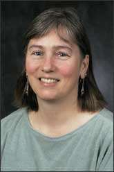

Catherine Forster
From the age of four, Catherine Forster knew that someday she wanted to hunt for dinosaur fossils. Her ambition never wavered. After graduating from high school, she studied geology and anthropology at the University of Minnesota and then completed her graduate and doctoral work at the University of Pennsylvania.
While still a student, Forster began doing paleontology-related work for the United States Geological Survey. After graduation she moved to Chicago, where she spent two years as a collection manager at Chicago's Field Museum before accepting a post-doctoral position at the University of Chicago. During this time, she worked closely with Paul Sereno and participated in several of his expeditions. (Go to the Chapter 15 feature "New Data on Dinosaur Evolution" for information on Sereno and his work.) In 1994 she became a professor at the State University of New York at Stony Brook.
In 1995, on an expedition to Madagascar, Forster was part of a team that discovered a primitive "dinosaur-bird." The raven-sized fossil contained a combination of many features of early birds and those of dinosaurs. For example, it had feathered wings, like a bird, and sickle-shaped claws, like a Velociraptor dinosaur. The specimen is considered evidence of a link between theropod dinosaurs and the first birds. Forster and her colleagues named it Rahona ostromi, which means "Ostrom's menace from the clouds," as a tribute to John Ostrom, Yale professor who revived the theory that birds descended from dinosaurs. (The name was later amended to Rahonavis ostromi—"Ostrom's menace-from-the-clouds bird"—when it was discovered that there already was a genus Rahona.)
Forster continues to teach anatomy and vertebrate paleontology at Stony Brook University. She continues to carry out expeditions in South Africa, Madagascar, Zimbabwe, and Argentina, where she and her colleagues have discovered numerous new dinosaurs and other ancient creatures. She is also president of the Jurassic Foundation, an organization that provides funding for dinosaur research and education.